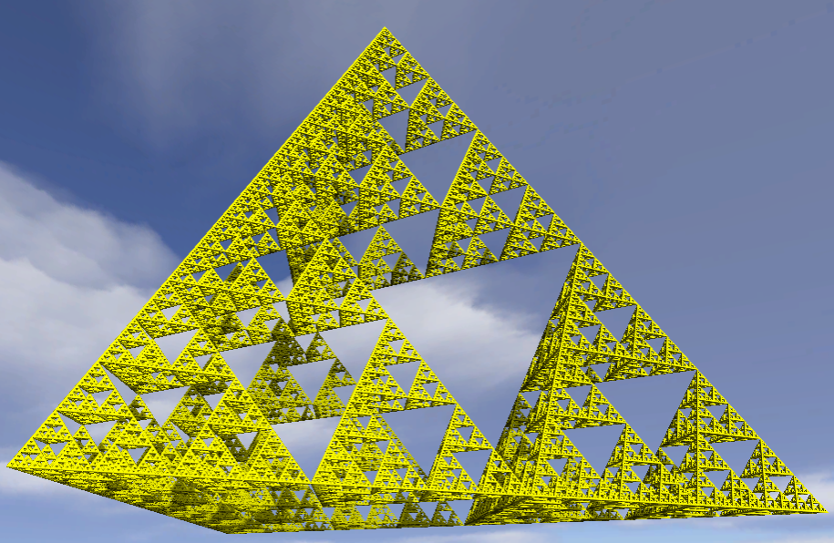

La tecnica del RayMarching consiste nello sparare un raggio per ogni pixel dell'immagine a schermo, lo si fa marciare in una direzione predeterminata e si verifica se la punta del raggio si interseca con una figura nello
spazio dell'applicazione; se non esiste un intersezione, il raggio viene prolungato nella stessa direzione per una distanza pari alla distanza che separa la punta del raggio dalla figura più vicina ad esso; se esiste una intersezione
in un determinato punto dello spazio tridimensionale, allora quel punto verrà colorato e illuminato per essere mostrato a schermo.
Per il RayMarching, viene selezionata una posizione per la telecamera, viene messa una griglia di fronte
ad essa e inviati raggi che, dalla telecamera, attraversano ogni casella della griglia, dove ogni casella rappresenta un pixel dell'immagine finale.
Di queste figure si conosce solo la posizione nello spazio [x, y, z], non la forma, che verrà computata in tempo reale, e pertanto è necessario un modo per determinare la distanza della punta del raggio con le figure nel mondo che si vogliono
rappresentare.
L'algoritmo
L'algoritmo richiede come Parametri:
rayOrigin: origine del raggio (la telecamera)
rayDirection: direzione del raggio
depth: profondita di campo per la visione
e Costanti:
maxRayDistance: distanza massima che può percorrere il raggio
maxRaySteps: numero massimo di step che può eseguire il raggio
ACCURACY: distanza minima dalla figura per considerarla toccata dal raggio
questa costante è modificabile nell'applicazione
Ɐ step del raggio, viene controllato se ha superato la sua distanza massima O la profondità di campo; se il risultato di questo controllo da esito positivo significa che il raggio non ha incontrato ostacoli sul
suo percorso, pertanto non è necessario calcolare il colore del pixel e l'algoritmo termina.
Se da esito negativo, viene aggiornata la posizione del raggio, che corrisponde alla posizione originale più un offset pari al vettore della
direzione del raggio moltiplicato per la distanza t percorsa dal raggio.
Con questa nuova posizione (pos) viene calcolata la distanza d con la figura più vicina mediante la funzione distanceField;
se la distanza è minore della ACCURACY significa che il raggio tocca la figura, quindi è possibile colorare e applicare luci ed ombre su quel pixel in quella posizione. Se invece non tocca nessuna figura, si incrementa la
distanza t percorsa e si ricomincia l'algoritmo con la nuova posizione della punta del raggio.
La funzione distanceField restituisce un vettore di 4 elementi [r, g, b, w]: i primi 3 rappresentano il colore
dell'oggetto, mentre w rappresenta la distanza tra raggio e figura più vicina.
Signed Distance Function (SDF)
Una SDF è una funzione che prende in input una posizione P nello spazio e restituisce la distanza tra il punto P e la figura che rappresenta, con il segno, poiché il segno indica se il punto P è fuori (distanza positiva), dentro (distanza negativa)
o sulla superficie (distanza zero) della figura.
Un esempio basilare è la SDF di una sfera dove la distanza tra punta del raggio e sfera è rappresentato dalla distanza del punto P dal centro della sfera meno il
raggio.
Dato che p è un vettore è sufficiente prendere la lunghezza di esso per il calcolare la SDF.
In questi esempi possiamo vedere che i punti sono sulla superficie nel primo caso, dentro alla sfera nel secondo e fuori dalla sfera
nel terzo.
Dato che con le SDF è possibile stabilire la distanza esatta tra la punta del raggio e le figure che sono nel mondo, invece di incrementare la lunghezza del raggio di una dimensione fissa relativamente piccola, per evitare di entrare dentro una
figura, è possibile prolungare il raggio di una distanza massima pari alla distanza che divide la punta dalla figura più vicina, evitando così di attraversare la superficie.
Questa tecnica di tracciamento del raggio è chiamata Sphere Tracing.
Nella
prima figura, p0 rappresenta la telecamera e la linea blu rappresenta la direzione del raggio. Nel primo step viene calcolata la distanza minima tra la telecamera e la superficie della scena; siccome il punto sulla superficie
più vicino a p0 non ostacola il raggio, è possibile farlo marciare ancora fino a raggiungere una superficie in p4.
Nella funzione distanceField utilizzata nell'algoritmo visto in precedenza, sono raggruppate le SDF dei frattali che si possono rappresentare con questa applicazione.
Frattali 3D
Cos'è un frattale? Un frattale è un oggetto geometrico dotato di omotetia interna: si ripete nella sua forma allo stesso modo su scale diverse, e dunque ingrandendo una qualunque sua parte si ottiene una figura simile all'originale.
C'è una differenza sostanziale tra un oggetto geometrico euclideo ed un frattale:
Un oggetto euclideo si costruisce generalmente utilizzando una funzione sul piano cartesiano
Un oggetto frattale si basa su un algoritmo, quindi un metodo che deve essere utilizzato per disegnare l'oggetto.
L'algoritmo non è mai applicato una volta sola, ma è iterato un numero di volte teoricamente infinito; infatti ad ogni iterazione l'oggetto si avvicina sempre di più al risultato finale (per approssimazione) e dopo un certo numero di iterazioni l'occhio umano riesce più a distinguere le modifche O l'hardware di un computer non è più in grado di migliorare ulteriormente il disegno.
I frattali possono essere definiti con delle SDF e quindi essere rappresentati con la tecnica del RayMarching.
Tetraedro di Sierpinski
Il triangolo di Sierpinski è un frattale basato su un triangolo equilatero, creato dividendolo in 4 triangoli più piccoli, rimuovendo il triangolo centrale e ripetendo i passi sui triangoli rimanenti. Applicando questi passi nello spazio 3D si viene a creare un tetraedro formato da 4 tetraedri minori con uno spazio vuoto al centro. Nelle
figure è possibile vedere un esempio della creazione del triangolo di Sierpinski e un estrapolato dell'applicazione del tetraedro;

Algoritmo
L'algoritmo necessita di:
pos : posizione del raggio nello spazio 3D
tetraIterations : numero di iterazioni dell'algoritmo
scale : scala del frattale che ne definisce la dimensione
Per cominciare vengono definiti i 4 vertici del tetraedro, con un offset dato dalla scala di rappresentazione. Ɐ iterazione vengono fatti confronti per stabilire quale vertice è il più vicino al punto.
Successivamente
viene raddoppiato il vettore pos e sottratto il vettore che corrisponde al vertice più vicino.
Alla fine delle iterazioni, l'algoritmo restituisce la lunghezza del vettore pos divisa per l'elevamento a
potenza di 2 con il numero totale di iterazioni.